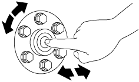

PILOT BEARING INSPECTION [F65M-R]
id0510q1157600
1. Remove the clutch cover. (See CLUTCH UNIT REMOVAL/INSTALLATION [F65M-R].)
2. Inspect the pilot bearing for damage or wear, and the rotation condition.
